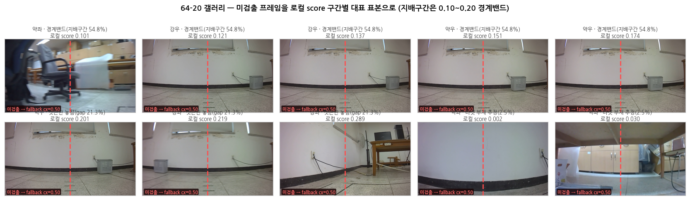

| 시점 | 맥락 | 결과 | 판정 |
|---|---|---|---|
| 2026-06-30 CH58 프롬프트 어블레이션 |
Kosmos-2 6종 + OWL-v2 5종 쿼리 × 39세션. OWL-v2를 "방향까지 추정하는" 용도로 평가 | det율 35~100%(쿼리별), dir정확도 0%, ~427ms "쿼리 불문 방향 추정 불가"로 판단 — 이 지표는 이후 결함으로 확인됨 |
폐기(오판) |
| 2026-06-30 CH59 재측정 |
사람 라벨 185프레임으로 dir 지표를 다시 측정. CH58은 ground truth가 cx 방향이 아닌 주관적 위치였던 한계가 있었다 | L/R 정확도 99.1% · 검출 184/185 Kr(99.1%) · PG448(99.1%)과 동급 — 방향 추정 불가는 사실이 아니었다 |
정정 |
| 2026-07-03 A/B 계획 |
PG2(Kosmos-2 grounding)의 구조적 결함 회피 목적 —
; 중복검출·8초 지연·full-frame hallucination이
단일 forward pass 구조에서는 원천 불가 |
PG2 대체 후보로 재검토plan_20260703_owlv2_ab_grounder.md |
재검토 |
| 2026-07-06~ | 역할 축소 후 배포 — 방향 판단은 MLP 헤드가 하고 OWL-v2는 cx·cy·area만 공급 | 배포 그라운더로 전환, 이후 계속 사용 | 채택 |
3절부터 threshold를 계속 조정하는데, 그 값이 실제로 무엇을 정하는 것인지를
먼저 정리합니다. 이 절의 수치는 threshold를 걸지 않은 원점수 분포를 새로 측정한
것입니다(V6 val 300프레임, grounding_cached 제외).
OWL-v2는 후보 박스마다 "이 박스가 주어진 텍스트와 얼마나 맞는가"를
점수로 냅니다. 텍스트 임베딩과 박스별 이미지 임베딩의 유사도 로짓을 시그모이드에 통과시킨 값입니다.
threshold는 그 점수의 후처리 컷오프일 뿐입니다
(post_process_object_detection(threshold=…)).
로봇에게 threshold는 정확도 지표가 아니라 행동 분기입니다.
점수가 넘으면 has_bbox=1과 실제 cx가 헤드로 들어가고,
못 넘으면 has_bbox=0과 고정 fallback(cx 0.5 / cy 0.6 / area 0.06)이
들어갑니다. 두 실패의 성격이 비대칭입니다.
| 너무 높으면 — 미검출 | 너무 낮으면 — 오검출 | |
|---|---|---|
| 헤드 입력 | has_bbox=0, cx=0.5 고정 |
has_bbox=1, 틀린 cx |
| 모델 반응 | 학습된 적 없음 ( has_bbox=False가 0/16,599) |
정상 입력으로 취급 → 확신을 갖고 틀린 방향 |
| 복구 여부 | 추론 제어가 발동 (강제 재검출·회전) |
발동하지 않음 (has_bbox=1이므로 정상으로 보임) |
| 비용 | 시간 손실 | 주행 실패 |
즉 threshold는 "모른다고 말하기"와 "틀리게 확신하기" 사이의 선택입니다. 그리고 미검출은 복구 경로가 있고 오검출은 없습니다 — 이것이 임계값을 무한정 낮출 수 없는 진짜 이유입니다.
실기 근거(2026-07-31 159세션 배치): 그라운딩 가용성이 80% 이상이면 주행 성공 98.8%(79/80), 80% 미만이면 51.2%였습니다 (CH64 64-18, 159 세션). threshold는 이 가용성을 직접 움직이는 유일한 무비용 계수입니다.
threshold의 민감도는 임계값이 점수 분포의 어디에 놓였는지로 결정됩니다. 밀집 구간(최빈값)에 있으면 조금만 움직여도 크게 흔들리고, 꼬리에 있으면 둔감합니다. 실측 결과:
| 점수 구간 | 프레임 | 비율 | 분포 |
|---|---|---|---|
| 0.05~0.10 | 3 | 1.0% | ▏ |
| 0.10~0.15 | 3 | 1.0% | ▏ |
| 0.15~0.20 | 10 | 3.3% | ██ ← threshold 0.20 |
| 0.20~0.25 | 11 | 3.7% | ██ ← 0.25 |
| 0.25~0.30 | 14 | 4.7% | ███ |
| 0.30~0.40 | 41 | 13.7% | ████████ |
| 0.40~0.60 | 86 | 28.7% | █████████████████ |
| 0.60~1.00 | 132 | 44.0% | ██████████████████████████ |
"gray basket",
후처리 threshold=0.0으로 원점수 그대로 기록.① 0.20은 밀집 구간이 아니라 왼쪽 꼬리입니다. 점수 분포는 오른쪽으로 크게 치우쳐 있고(중앙값 0.572, 44%가 0.6 이상), 0.20에서 94.7%가 통과합니다. 0.05를 움직여도 검출률은 3~4%p만 변합니다(0.20→0.25에서 −3.7%p). → threshold는 초민감한 다이얼이 아닙니다.
② 그런데도 실기 영향이 컸던 이유는 "평균이 아니라 최악 구간"이기 때문입니다. 움직이는 3~4%p가 하필 어려운 프레임이고, 그 프레임들이 모인 세션이 가용성 80% 경계를 넘나듭니다. 성패를 가르는 것은 전체 평균 검출률이 아니라 세션별 가용성이 80%를 넘는지입니다(64-18). 같은 −3.7%p가 쉬운 세션에서는 아무 일도 아니고 어려운 세션에서는 실패로 바뀝니다.
③ 검출이 어려운 쪽은 우측입니다. 경로 유형별 중앙 점수:
| 경로 계열 | 중앙 점수 | 0.20 통과율 |
|---|---|---|
| 우측 계열 (strong/weak_right) | 0.322 ~ 0.447 | 80.0 ~ 88.5% |
| 중앙 계열 (center) | 0.551 ~ 0.773 | 100% |
| 좌측 계열 (strong/weak_left) | 0.474 ~ 0.727 | 93.5 ~ 100% |
CH65 65-3의 "강우 검출이 가장 어렵다"가 원점수 수준에서 재확인됩니다. 그리고 주의할 점 — 실기 주행 실패가 많은 쪽은 좌측(강좌·약좌 80%)이고 검출이 어려운 쪽은 우측입니다. 검출 난이도와 주행 난이도는 별개 축이며, 이것이 2축 분해(65-1)의 근거이자, 좌측 실패의 원인을 검출이 아니라 헤드의 cx 응답(68-9)에서 찾은 이유입니다.
scripts/owlv2_score_distribution.py ·
결과 docs/v5/detector/owlv2_score_distribution.json
OWL-v2 출력 박스 중 score ≥ threshold만 채택합니다. 실기 성능에 직결된 유일한 계수입니다.
| threshold | 정탐 유지 | 오탐률 | 실기 검출률* | 비고 |
|---|---|---|---|---|
| 0.10 | 100% | 74.7% | — | 부재 판정 불가 |
| 0.15 | 99.5% | 40.5% | 49.3% | 오탐 과다로 배제 |
| 0.20 | 97.7% | 12.7% | 33.8% | 현재 적용 |
| 0.25 | 95.3% | 0.0% | 19.7% | Youden J 최대 — 원래 확정값 |
| 0.30 | 93.5% | 0.0% | — | 정탐 손실 증가 |
| 0.40 | 79.1% | 0.0% | — | 정탐 손실 과다 |
| 지표 | 0.25 | 0.20 | 변화 |
|---|---|---|---|
| 평균 grounding 성공률(gnd%) | 33.5% | 81.1% | +47.6%p |
| 세션 내내 완전 미검출 비율 | 39.7% | 3.0% | −36.7%p |
| 실기 주행 성공률 (강좌+약좌) | 13/40 = 32.5% | 33/41 = 80.5% | +48.0%p |
| 항목 | fp32 | fp16 | 변화 |
|---|---|---|---|
| 지연 (Jetson Orin 실측) | 1901.7ms | 962.1ms | 1.98배 빠름 |
| 지연 (로컬 GB10 실측) | 343.7ms | 198.3ms | 1.73배 빠름 |
| has_bbox 일치율 (fp32 기준) | 100% | 90.0% (108/120) | −10%p |
| 불일치 방향 | 12건 전부 "fp32 검출 / fp16 미검출" — fp16만 검출한 경우 0건 | ||
| 좌표 정확도 (둘 다 검출된 108건) | cx/cy/area 평균 차이 0.0001~0.0002 — 사실상 동일, 0.05 이상 벌어진 경우 0건 | ||
[v * bbox_scale for v in bboxes[idx]]). area만 곱하는 게 아니라 has_bbox=1.0도 3.0이 됩니다.0~1로 정규화된 bbox 값이 L2 정규화된 256차원 비전 특징에 비해 작아, 두 신호의 스케일을 맞추려는 입력 특징 스케일링입니다. 화면에 그려지는 검출 박스의 픽셀 크기와는 무관하며, 학습·서빙에 동일 값이 적용되어야 해서 체크포인트 메타데이터에서 직접 읽습니다.
| bbox_scale | val acc (3-seed) | FWD+L / FWD+R recall |
|---|---|---|
| 1.0 | 73.8% ± 0.2%p | 72.3% / 71.5% |
| 2.0 | 74.2% ± 0.2%p | 72.6% / 73.8% |
| 3.0 (배포값) | 73.8% ± 0.2%p | 72.5% / 72.2% |
현 파이프라인(exp73 · OWL-v2 · MLP · stride=1)에서는 세 값이 오차범위 안에서 동일합니다. 옛 exp71(PG2 + Transformer)에서 보고된 72%→85% 효과는 그라운더와 헤드가 모두 다른 구성이라 현재는 재현되지 않습니다. 3.0을 유지하는 이유는 성능 이득이 아니라 배포 체크포인트가 그 값으로 학습됐기 때문입니다.
OWL-v2가 ~1.9초 걸려서 매 프레임 못 돌립니다. 3프레임마다 1회만 새로 검출하고 나머지는 직전 bbox를 재사용합니다. 이것이 실기 판단 주기를 6Hz가 아닌 약 1.3Hz로 만드는 원인이고, zero-order hold(단속 제어) 구조를 낳습니다. 2026-08-07 실기 100세션 실측: 전체 1,088개 결정 중 553개(50.8%)가 캐시 재사용으로, skip_n=3 설정과 일치합니다.
exp73_owl_stage1v3_v6_mlp.pt)는 cadence-aligned가 아니라 stride=1(프레임 단위)로 학습되었습니다
(train_exp73_stage1v3_heads.py의 build_windows()). cadence-aligned는 별도 실험 계열입니다.
query = phrase # 코드에서 "gray" 강제 접두를 하지 않는다
# 이유: 강제 접두는 임의 객체("red ball") 요청을 망가뜨림
# (plan_20260705_vla_ladder_step1_2.md)
| 쿼리 변형 (CH58) | det율 | dir정확도 |
|---|---|---|
"basket" / "gray laundry basket" / "gray container" / multi |
35~100% | 0% |
단 쿼리에 따라 검출률은 실제로 변합니다(35~100%) — 즉 텍스트가
"무엇을 찾을지" 지정하는 역할은 실제로 기능합니다. 현재는 multi_prompt = False로
단일 쿼리 "gray basket"만 고정 운용합니다.
multi_prompt는 설정으로 존재하나 A/B로 검증하지
않았습니다. 언어 조건화를 주장하려면 이 실험이 필요합니다.
| 비교 조건 | PG448 | OWL-v2 | 격차 |
|---|---|---|---|
| v6(180ep) / mlp 헤드 | 77.9% | 77.7% | 0.2%p |
| v6(225ep) / cxgeom 헤드 | 76.2% | 75.8% | 0.4%p |
| cadence-aligned 학습 후 HELD 평가 | 28.3 ± 3.8% | 25.3 ± 3.8% | 3.0%p |
오프라인 지표상 두 그라운더 차이는 대부분 1%p 이내라 "그라운더 교체는 비용 대비 개선폭이 작다"고 판단했습니다(CH63 63-5). 단 이는 오프라인 재생 기준이고, 실기에서는 검출률 자체가 성패를 가르므로 "어느 그라운더냐"보다 "그 그라운더가 지금 프레임을 잡느냐"가 중요합니다.
실기에서 "분명히 보이는데 검출 안 됨"이 반복돼, 원인을 하나씩 배제했습니다.
| 가설 | 검증 방법 | 결과 |
|---|---|---|
| 타겟이 화면에 없다 | 미검출 프레임 로컬 재실행 | 기각 — score<0.01은 2.5%뿐 |
| transformers 버전 차이 4.45.2 vs 4.49.0 |
격리 venv로 같은 프레임 재실행 (soda) | 기각 — score가 소수점 4자리까지 동일 (0.1642 / 0.2327 양쪽 일치) |
| 젯슨 하드웨어(Orin) 차이 | 미검출 197프레임 전량 로컬 재실행 후 대조 | 부분 기여 — 최대 21.3%만 설명 |
| confidence가 임계값 경계에 몰림 | 미검출 프레임의 로컬 score 분포 분석 | 지배 원인 — 54.8%가 0.10~0.20 밴드 |
| 로컬 score | 해석 | 건수 | 비중 |
|---|---|---|---|
| < 0.01 | 타겟이 화면에 없음 | 5 | 2.5% |
| 0.01~0.10 | 매우 낮음 | 42 | 21.3% |
| 0.10~0.20 | 보이지만 임계값 바로 아래 — 지배 구간 | 108 | 54.8% |
| ≥ 0.20 | 로컬은 검출 = 환경차 확정 | 42 | 21.3% |
젯슨×로컬 판정 일치도는 86.6%(344/397)로, fp32×fp16 일치도 90.0%와 동급입니다 — 즉 환경차는 양자화 수준의 2차 효과입니다. "바구니가 크고 명확한데 젯슨만 놓친" 심각 사례는 score 0.40 이상 5건 / 0.70 이상 2건에 불과해, torch/Orin 원인 규명의 실무 우선순위는 낮습니다.
cx=0.50.
CONCLUSION_20260704_fallback_repro_gap.md는 "서버 fallback 206프레임이 로컬에서
206/206(100%) 탐지 → 환경 gap이 지배적 원인"이라 결론했습니다. 그런데 그 100%는
PG2/Kosmos-refexp/OWL 3모델 중 하나라도 박스를 내면 탐지라는 훨씬
느슨한 기준이었습니다. 실제 운영 기준(OWL-v2 단독 · threshold 이상)으로 재실행하면
78.7%가 로컬에서도 미검출입니다.
| 모델 | 파라미터 | 지연 | VRAM | 배수 |
|---|---|---|---|---|
| OWL-v2 (fp32) | 0.155B | 1901.7ms | 1.982GB | 35배 느림 |
| OWL-v2 (fp16) | 0.155B | 962.1ms | — | 18배 느림 |
| Kosmos-2 vision 인코더 | 0.303B | 53.7ms | 0.625GB | 기준 |
실기 성공률 95/100을 낸 그 배치의 원본 H5에서 그라운딩 관련 값을 직접 집계했습니다
(inference_sessions_recv/20260807/h5/, 100세션 · 총 1,088개 결정).
| 항목 | 실측값 | 비고 |
|---|---|---|
| 그라운딩 성공 프레임 | 985 / 1,088 = 90.5% | bbox[:,3](has_bbox) 집계 |
| 세션별 검출률 평균 | 88.7% | 중앙값은 100.0% |
| gnd% ≥ 80%인 세션 | 82 / 100 | 검출률 100%인 세션은 59개 |
| 캐시 재사용 프레임 | 553 / 1,088 = 50.8% | grounding_skip_n=3과 정합 |
score_thresh | 100 / 100 세션 모두 0.20 | 운영값이 실제로 적용됐음을 세션 단위로 확인 |
status가 전량 manual_stop이라 세션별 성공/실패 라벨이 없습니다.
2절·3절에 인용한 98.8%(79/80)는 2026-07-31 159세션 배치의 값이며,
당시 성공률은 89/100이었습니다. 두 배치를 같은 근거로 섞어 인용하지 않도록 주의하십시오.
grounder_model = OWL-v2 (google/owlv2-base-patch16-ensemble) owlv2_thresh = 0.20 # 0.25에서 하향 — 3절 ① bbox_scale = 3.0 # bbox 4채널 전체 배율(area 전용 아님) — 3절 ③ grounder_input_px = 960 # 프로세서 native 입력 grounding_skip_n = 3 # 캐시 재사용 주기 — 3절 ④ multi_prompt = False # 단일 쿼리 "gray basket" — 3절 ⑤ dtype = fp32 # fp16 비권장 — 3절 ② force_reground_on_miss = True # 미검출 다음 스텝 캐시 강제 스킵 preview_enabled = False preview_hint_cx = True cx_jump_filter = False
미검출 시 fallback: cx=0.5, cy=0.6, area=0.06, has_bbox=0.
헤드는 has_bbox=0 신호를 입력으로 받지만
학습 데이터에 has_bbox=False 프레임이 0.00%(0/16,599)여서
대응을 배운 적이 없습니다 — 그래서 회복을 추론 제어 로직으로 처리합니다
(회전 후 강제 재검출 / 회전 0.4초 후 자동정지(제어 계층) / 연속회전 차단 / 콜드스타트 가드 3프레임).
grounding/{bbox, score, score_thresh, latency_ms, cached} 전부 존재,
score_thresh는 100/100 모두 0.2). 이제 저장된 score로
threshold-검출률 곡선을 실기 재수집 없이 뽑을 수 있습니다.
단 남은 문제 — 그 배치 H5에는 세션별 성공/실패 라벨이 없어
(status가 전량 manual_stop) 검출률 곡선은 뽑히지만
주행 성공률과의 대조는 별도 라벨 없이는 불가능합니다.
근거: CH58(프롬프트 어블레이션) · CH63 63-5(그라운더 교체) ·
CH64 64-13(리소스) / 64-16(fp16) / 64-17(threshold ROC) /
64-18(100회 결과) / 64-19(요인 분해) / 64-20(미검출 정밀 분석) ·
scripts/eval/owlv2_threshold_roc.py · scripts/analyze_jetson_local_gap.py